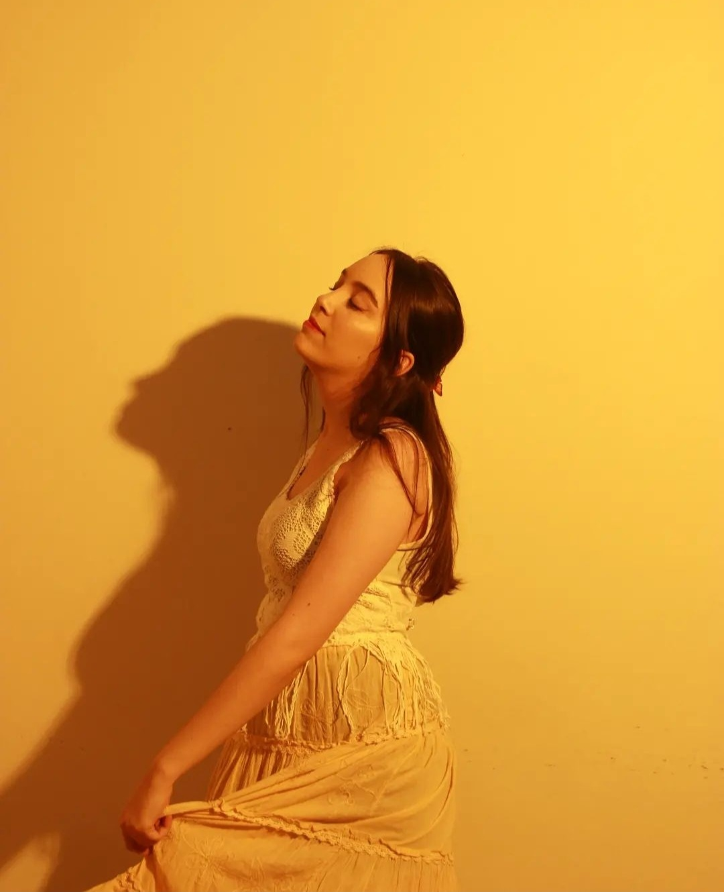
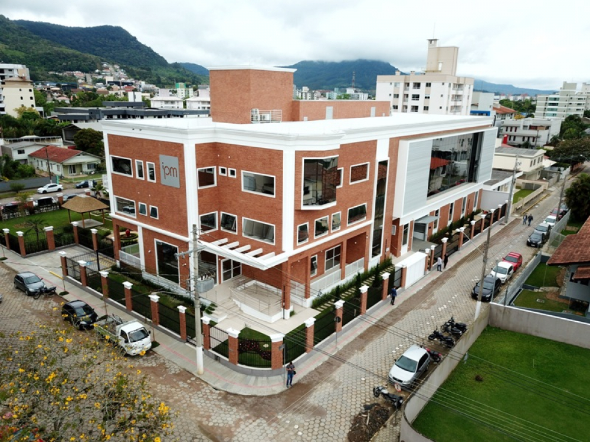
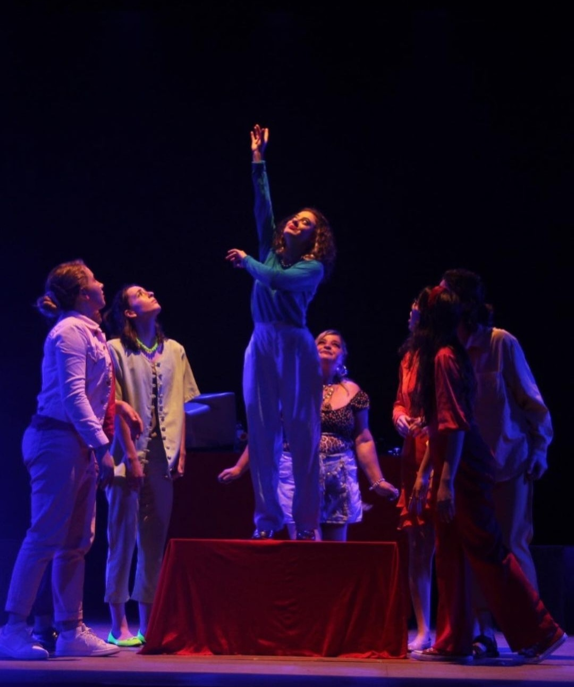

1. Um pouco sobre mim...
Olá, me chamo Julia da Silva Fitzlaff, tenho 21 anos, sou estudante do curso de Sistemas de Informação na Unidavi e moro em Rio do Sul (SC).
2. Primeiro contato com a tecnologia
Em 2018 ingressei no Instituto Federal Catarinense (IFC) - Campus Rio do Sul, onde tive meu primeiro contato na área de TI com o curso Técnico em Informática integrado ao ensino médio.
3. Atuação profissional
Atualmente trabalho na área de tecnologia na empresa IPM Sistemas, que tem como atuação no fornecimento de software para Gestão Pública. Minha função é Analista de Migração no módulo Suprimentos, onde realizo conferência de dados de clientes que estão em processo de migração de sistema.
4. Hobbies
Como forma de entretenimento gosto bastante de viajar, passear, fazer piqueniques, ir em cafeterias, assistir filmes/séries, pintar telas, ouvir música, cantar, jogar vôlei e ping pong.
Em 2021 fiz aulas de teatro, que foi onde percebi como esse meio mudou de forma positiva a minha vida e o quanto sou apaixonada por artes.
